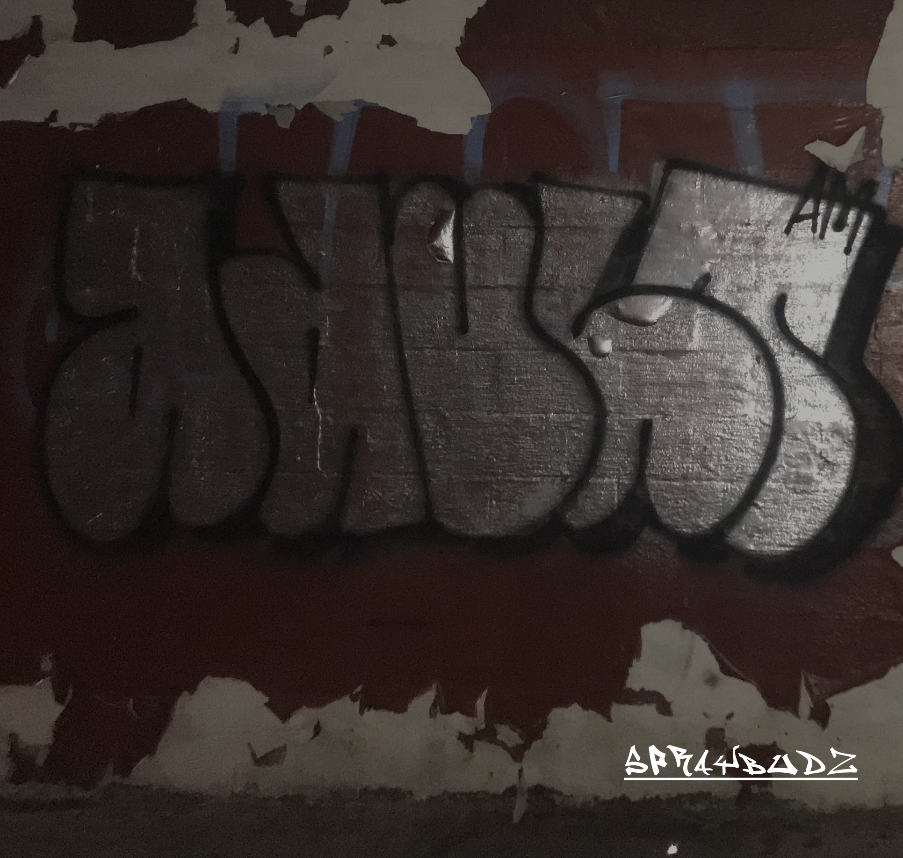
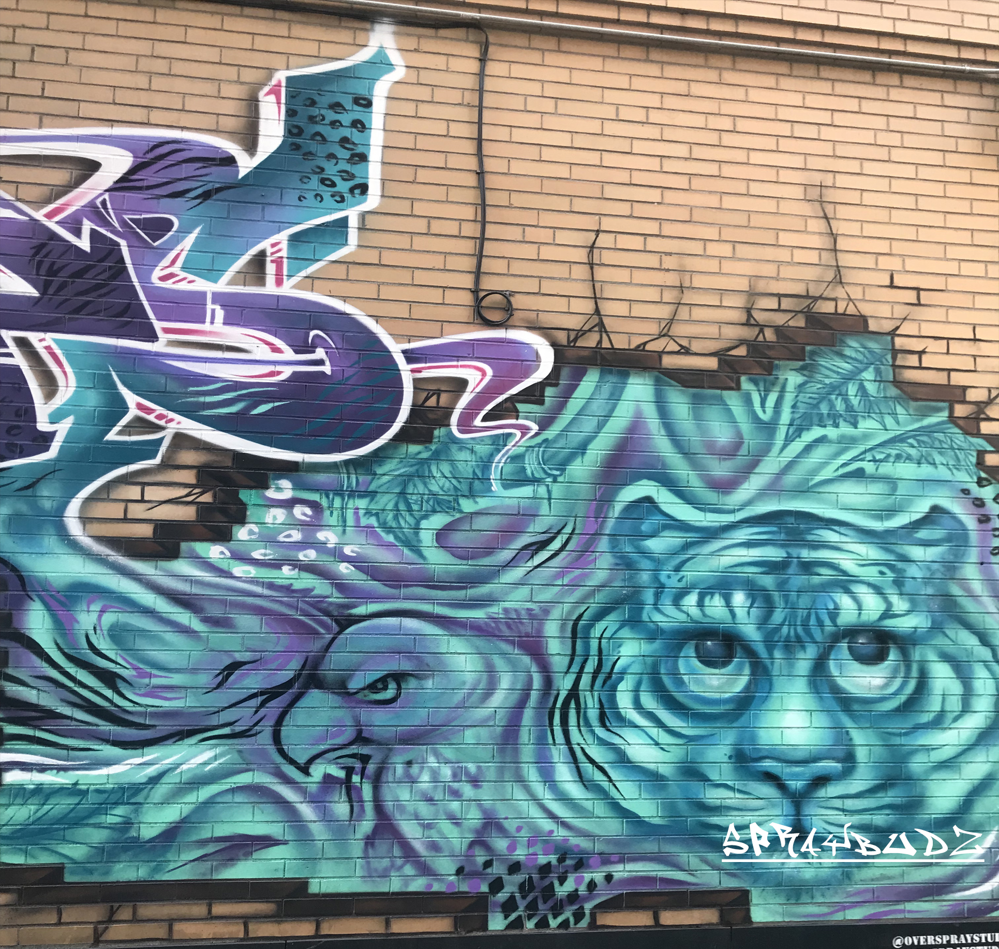
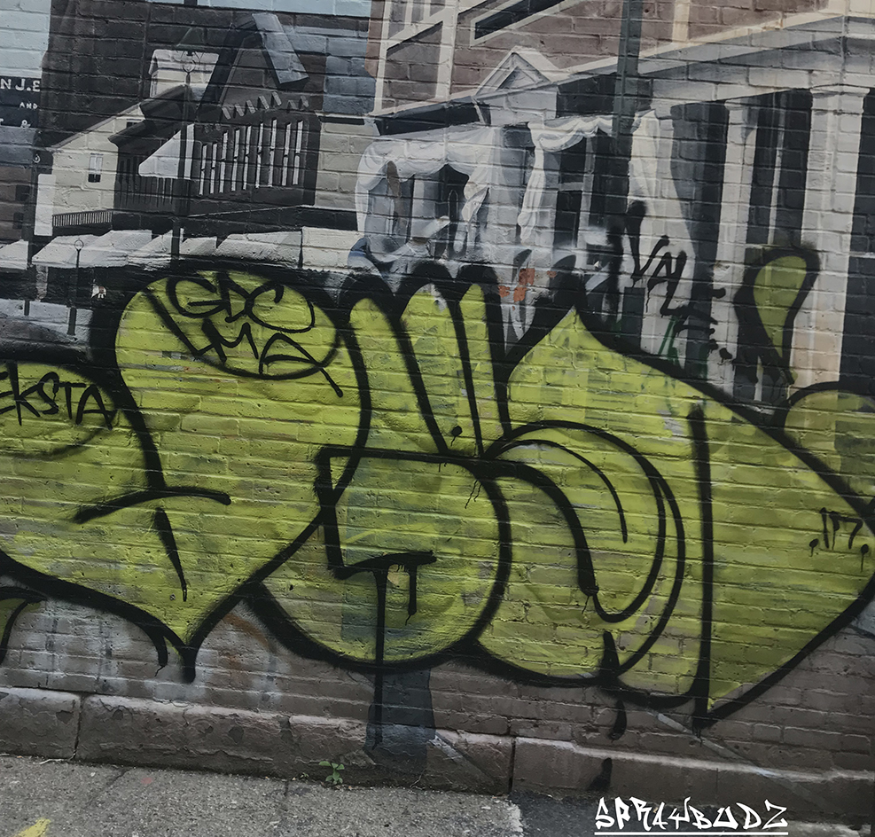

" ART IS A FREEDOM WORTH FIGHTING FOR !"
SprayBudz is a private group that promotes street art and graffiti art. We supply half the nation with premium spray paint and give in depth tutorials. At our website you can learn about the newest style of spray painting and the different techniques that will help you grow as an artist.We also offer an in-depth tutoral on how to make your own spray paint gun.
We also probide safety tips to make sure your spray painting experience is a great one. Also we provide guides on where not to spray paint and the conseuences for spray painting on public property. We are long time member of Providence's beautifican project, which allows us to create graffiti art on abandoned buildings.
To start, find an old spray paint can and depress the nozzle to release any remaining pressure inside. This is important as you risk having the can explode when you saw it open if there's any pressure difference.
Once all the pressurized air has escaped, place the can in a vise and saw around the neck of the can. This will separate the can into the lower housing and the upper nozzle. Keep the upper nozzle and tip out the glass marble found inside the can housing, you can discard the can housing after.
Next, we will need a one way valve to pressurize our DIY spray can. For this I used a Schrader valve from an old bike tire, any type of valve will work. I chose this type as it's very common and discarded bike tire inner tubes are easy to acquire from bike repair stores.Cut the inner tube on either side of the valve, then trim the rubber around the valve leaving a 12mm (1/2") skirt of rubber.
Next, find a drill bit that is around the same size as the valve you're using. For Schrader valve you'll need a 1/4" bit. Drill into the shoulder of an empty PET bottle. Remove any burrs from the drilled opening, then feed the valve into the neck of the bottle and through the new opening.
Drop a small amount of a rubberized adhesive through the neck of the bottle and onto the rubber skirt around the valve, then pull the valve so that the rubber skirt makes contact with the inside of the PET bottle. You may need to poke your fingers through the neck opening to ensure good contact is made. Allow the adhesive to dry overnight.
An opening needs to be made in the cap of the PET bottle to accept the old spray can nozzle. For my paint can I found that an opening slightly larger that 3/8" was required.I tried a few different types of adhesives here and found that the best results were with Sugru. I was able to mold the sugru putty around the opening and join the old spray mechanism with the PET cap. Allow to cure overnight.
After your assembly has dried and cured completely hook it up to a bike pump and test to ensure you have a hermetic seal, if you have any leaks (you'll know) you need to address this with more glue or to re-glue the parts that aren't sealed. This is critical!
If you're like me, you have heaps of old, half-used, miscellaneous cans of paint hiding in storage somewhere. Time to put that paint to good use! If you are mixing paint make sure you are using like-kinds of paint (latex/acrylic with latex/acrylic and oil paint with oil paint), do not mix oil and latex paints! Mixing dissimilar paints is not advised as it's essentially oil and water. Though, it may produce some interesting results. In fact, ignore my warning, try it. Tell me your results!
Drop your old spray paint marble into the bottle first. then carefully pour your paints into the bottle and fill about 3/4 of the way full. You're going to need a funnel. Since regular paint is quite thick, I diluted my paint with a little water after it was in the bottle. I ad a ratio of about 6:1 paint to water. Experimentation here will produce different results. A thicker paint may not drip as much, but might require more pressure in the bottle (see next step regarding pressurization).
Seal bottle with nozzle cap and shake well to ensure an homogenous mix of paint and water.
Time to pressurize the bottle and make this paint can come to life. Hooking the valve to the bike pump I found I had good results at about 20psi. Experimenting here with different pressure may produce different effects. It's important to know that over pressurization will cause your paint bottle to fail, most likely at the nozzle connection. Start with a low psi and gradually work your way up.
Keep an eye on your connection during pressurization to ensure no leaks have spring. I had my bottle up to about 25psi and have yet to notice any leaks. Over-engineering your sealed connections is a good thing here